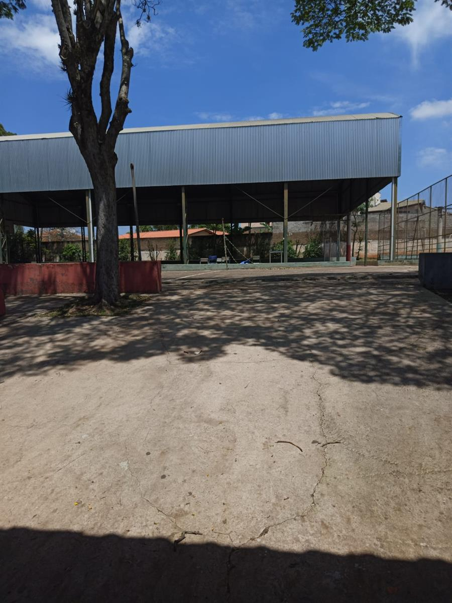
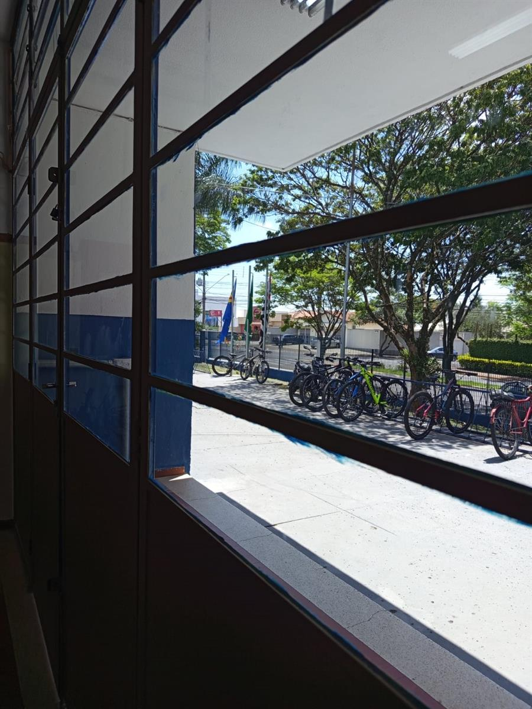

EDUCAÇÃO PÚBLICA · CERQUILHO, SP
Um lugar para aprender, crescer e construir o futuro.
Seja bem-vindo à Escola Arthur da Silva Bernardes Presidente. Este é o espaço para conhecer nossa unidade e encontrar serviços importantes para a comunidade escolar.

NOSSA ESCOLA
Uma comunidade que aprende junta.
A Escola Arthur da Silva Bernardes Presidente está localizada em Cerquilho, no interior de São Paulo. Este site reúne informações institucionais e caminhos para serviços públicos ligados à vida escolar.
As informações de contato, horários e comunicados serão incluídos após confirmação pela equipe da escola.
Veja os espaços da escolaCONHEÇA POR DENTRO
Espaços para descobrir.
Um pouco da estrutura da nossa unidade escolar.



CANAIS OFICIAIS
Serviços para a comunidade.
Encontre os principais canais oficiais relacionados à escola e ao município.
ONDE ESTAMOS
Estamos em Cerquilho.
Escola Arthur da Silva Bernardes Presidente
Av. Pres. Washington Luíz, 478 · Cerquilho, SP